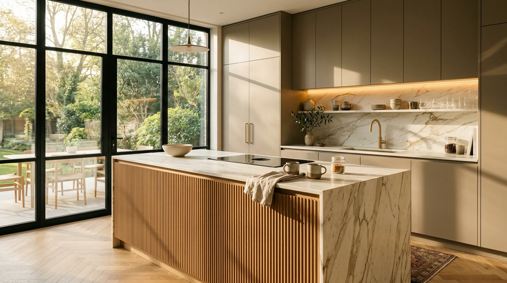

İstanbul Geneli Mutfak Dolabı İmalatı Bölgelerimiz.
Ümraniye Dudullu atölyemizden İstanbul’un 21 ilçesine aracısız doğrudan imalat satış, yerinde lazerli ölçü alımı, 3D projelendirme ve kendi ekibimizle anahtar teslim montaj.

İstanbul Geneli Ücretsiz Yerinde Lazer Ölçüm
2026 KoleksiyonuHizmet Verdiğimiz İstanbul İlçeleri
Bulunduğunuz ilçeyi seçerek bölgenize özel teslimat süresi, popüler kapak modelleri ve ücretsiz keşif randevu detaylarını inceleyebilirsiniz:
Ümraniye Mutfak Dolabı
⚡ Aynı Gün Ücretsiz Keşif & Merkez AtölyeYukarı Dudullu imalat atölyemizden Ümraniye geneline aracısız fabrika fiyatlarıyla özel ölçü mutfak dolabı imalatı. Tepeüstü, Çakmak ve Atakent'e aynı gün ücretsiz lazerli keşif ve 3D çizim.
Ataşehir Mutfak Dolabı
⚡ Hızlı Servis & Aynı Gün KeşifBatı Ataşehir ve Finans Merkezi kulelerine özel leke tutmaz Matplus ve lake ada mutfak dolapları. Parmak izi bırakmayan yüzeyler, sessiz frenli raylar ve 15 dakika içinde hızlı keşif randevusu.
Çekmeköy Mutfak Dolabı
⚡ Öncelikli Servis BölgesiAlemdağ ve Ömerli villalarına özel masif meşe dokulu country mutfaklar ve geniş erzak kilerleri. Müstakil ev mimarisine uygun ada tezgah çözümleri ve doğrudan atölye teslimi.
Sancaktepe Mutfak Dolabı
⚡ Hızlı Keşif & Ekonomik Atölye FiyatıSarıgazi ve Samandıra yeni konut projeleri için ekonomik doğrudan imalatçı fiyatlarıyla çizilmez membran ve akrilik mutfak dolapları. 1. sınıf 18mm MDF gövde garantisiyle hızlı montaj.
Kadıköy Mutfak Dolabı
💎 Lüks Mimari İmalat HattıBağdat Caddesi, Moda ve Caddebostan kentsel dönüşüm dairelerine özel lüks ipeksi mat lake ve porselen tezgahlı mutfaklar. Tavana sıfır çift kat dolaplar ve pirinç kulp tasarımları.
Üsküdar Mutfak Dolabı
💎 Konsept & Villa ProjeleriKuzguncuk, Çengelköy ve Beylerbeyi yalı/köşk dairelerine özel nem ve tuz dirençli fırın boya lake mutfak dolapları. Tarihi dokuya uyumlu neoklasik çıtalar ve asil renk kartelaları.
Maltepe Mutfak Dolabı
⚡ Sahil Bandı Hızlı MontajKüçükyalı ve Dragos sahil bandındaki daireler için deniz havasına dayanıklı akrilik ve reflekte füme cam kapaklı mutfaklar. Dar alanları genişleten aynalı paneller ve LED aydınlatmalar.
Kartal Mutfak Dolabı
⚡ Düzenli Montaj EkibiSoğanlık ve Atalar sahil rezidanslarına özel U ve L tipi modern mutfak dolapları. Balkon dönüşümlü alanlara özel kiler kuleleri, le-mans fasulye köşe sepetleri ve porselen tezgahlar.
Pendik Mutfak Dolabı
⚡ Geniş Servis AğıKurtköy Yenişehir siteleri ve sahil hattı için ekstra geniş tencere çekmeceli ve kahvaltı adalı fonksiyonel mutfak dolapları. Ağır yüke dayanıklı Blum tandem ray donanımları.
Beykoz Mutfak Dolabı
💎 Özel Villa & Doğa KonseptiAcarkent ve Beykoz Konakları villalarına özel gurme şef ada mutfakları, el oyması taçlı lake dolaplar ve şömine yanı ahşap paneller. Adaçayı yeşili ve antrasit renk kombinleri.
Sultanbeyli Mutfak Dolabı
⚡ Atölyeden Doğrudan SatışDudullu fabrikamıza komşu Sultanbeyli'de sıfır mağaza komisyonuyla doğrudan toptan fiyatına perakende mutfak dolabı. Kombi/boru gizleme panelleri ve takviyeli çekmeceler.
Tuzla Mutfak Dolabı
⚡ Sahil & Marina HattıTuzla Marina ve Tepeören villaları için sahil nemine %100 dayanıklı marin yeşil MDF ve poliüretan lazer bantlı mutfak dolapları. Çift eviyeli hazırlık adaları ve açık meşe tonları.
Şile Mutfak Dolabı
🌲 Yazlık & Villa ProjeleriŞile yazlıkları ve taş villaları için kış rutubetine dayanıklı marin yeşil MDF gövdeli country mutfaklar. Bahçe verandasına açılan barbekü servis tezgahları ve bohem ahşap detaylar.
Beşiktaş Mutfak Dolabı
💎 Lüks Mimari & RezidansEtiler, Bebek ve Levent'teki yüksek tavanlı konutlara özel raylı merdivenli monolitik lake dolaplar. Boğaz siluetine uyumlu minimalist J-profil kulpsuz modern tasarımlar.
Sarıyer Mutfak Dolabı
💎 Villa & Koru ProjeleriZekeriyaköy villaları ve Maslak penthouse daireleri için akıllı ev entegreli Servo-Drive elektrikli bas-aç kapaklar ve yekpare İtalyan porselen ada mutfak sistemleri.
Şişli Mutfak Dolabı
⚡ Şehir İçi Rezidans & YenilemeNişantaşı ve Teşvikiye apartmanlarına özel art-deco çıtalı lake kapaklar; Bomonti loftlarına uygun endüstriyel ceviz ve antrasit kombinasyonlu fonksiyonel mutfak projeleri.
Bakırköy Mutfak Dolabı
⚡ Sahil & Kentsel DönüşümYeşilköy, Florya ve Ataköy konakları için yoğun pişirmeye uygun yüksek debili davlumbaz bacalı dolaplar, çizilmez porselen tezgahlar ve masif ceviz çekmece içi bölücüler.
Başakşehir Mutfak Dolabı
⚡ Geniş Daire & Site ProjeleriBahçeşehir villaları ve Kayaşehir etaplarındaki geniş aile dairelerine özel çok katmanlı erzak kilerleri, köşe tambur mekanizmaları ve kolay silinen kaşmir membran kapaklar.
Beylikdüzü Mutfak Dolabı
⚡ Modern Site & RezidansYakuplu Marina ve Beykent siteleri için Marmara rüzgarına karşı poliüretan kenar bant korumalı, 10 yıl sararma yapmayan parlak akrilik ve matplus mutfak dolapları.
Eyüpsultan Mutfak Dolabı
⚡ Kemerburgaz & Göktürk HattıGöktürk/Kemerburgaz orman villaları için rustik meşe ada mutfaklar; tarihi Eyüp merkez daireleri için dar kolon-kiriş nişlerini değerlendiren pratik membran dolaplar.
Kağıthane Mutfak Dolabı
⚡ Vadistanbul & Kentsel DönüşümVadistanbul ve Seyrantepe genç rezidansları için gizlenebilir masa modülleri, dikey kiler kuleleri ve parmak izi tutmayan J-profil modern kulpsuz kompakt mutfaklar.
Evinizin Bulunduğu İlçeyi İletin, Aynı Gün Planlayalım
Lazerli ölçü cihazı, kapak numuneleri ve renk kartelalarıyla adresinize gelelim; mutfağınızı yerinde tasarlayalım.
İstanbul Geneline Doğrudan Atölyeden Teslimat
Tüm ilçelerimize aracısız atölye fiyatıyla hizmet veriyoruz. İmalat parkurumuzu ve montaj titizliğimizi inceleyebilirsiniz.